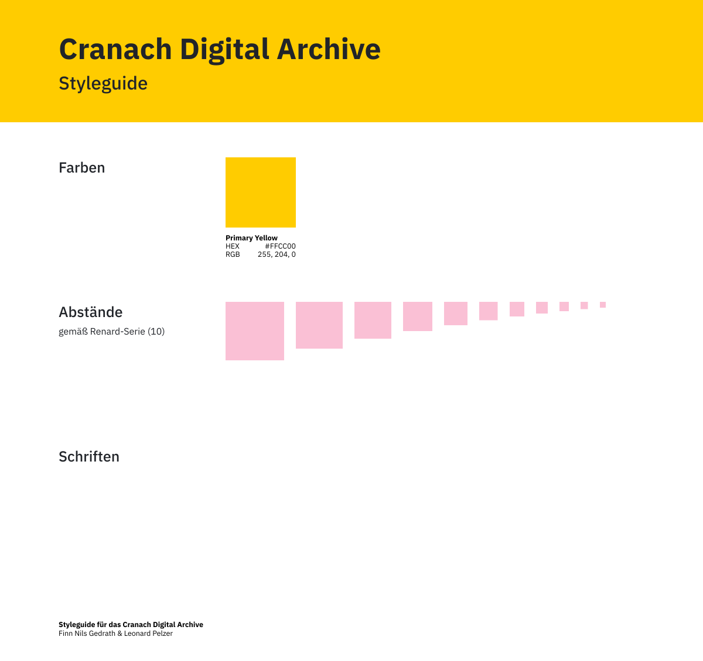

Cranach Digital Archive
Im Rahmen des Projektes wurden alternative Ansichten zu dem Cranach Digital Archive (CDA) entwickelt, um die Fülle an Information und Artefakten für Laien zu ordnen, um so eine explorative und gezielte Suche zu ermöglichen.
Bei der Erstellung dieser Mockups wurde der "Mobile First"-Ansatz angewendet und so die mobile Ansicht der Anwendung zu erst entworfen.

Smartphone
iPhone 8
In mathematics, an ellipse is a plane curve surrounding two focal points, such that for all points on the curve, the sum of the two distances to the focal points is a constant. As such, it generalizes a circle, which is the special type of ellipse in which the two focal points are the same.
Tablet
iPad Pro 12.9''
In mathematics, an ellipse is a plane curve surrounding two focal points, such that for all points on the curve, the sum of the two distances to the focal points is a constant. As such, it generalizes a circle, which is the special type of ellipse in which the two focal points are the same.
Style-Guide
Im Vordergrund der entwickelten Anwendung steht die Time-Ansicht, welche alle Bilder zeitlich chronologisch sortiert anzeigt. Über einen Interaktionsschritt kann zwischen den einzelnen Zoom-Stufen gewechselt werden.
